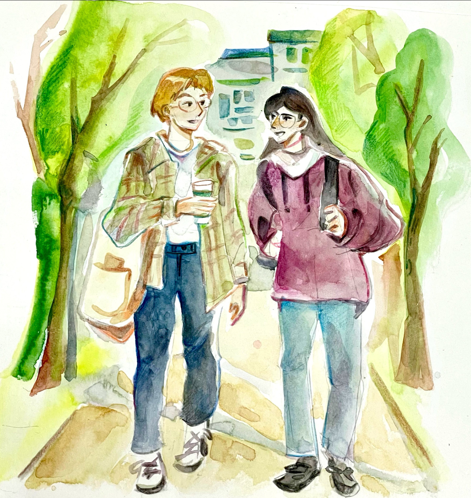
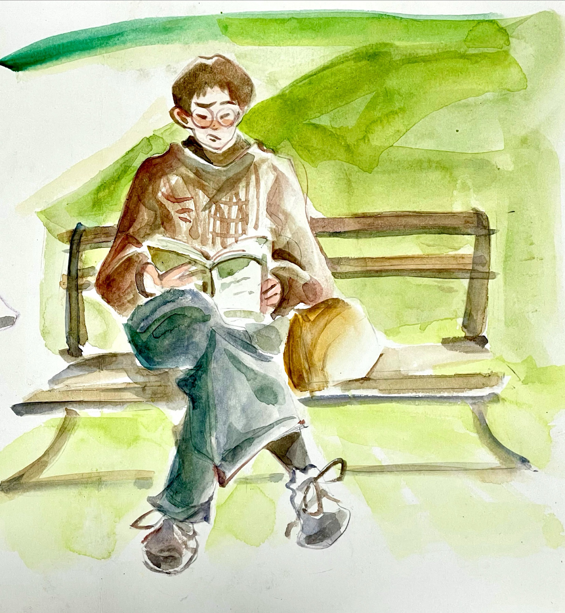
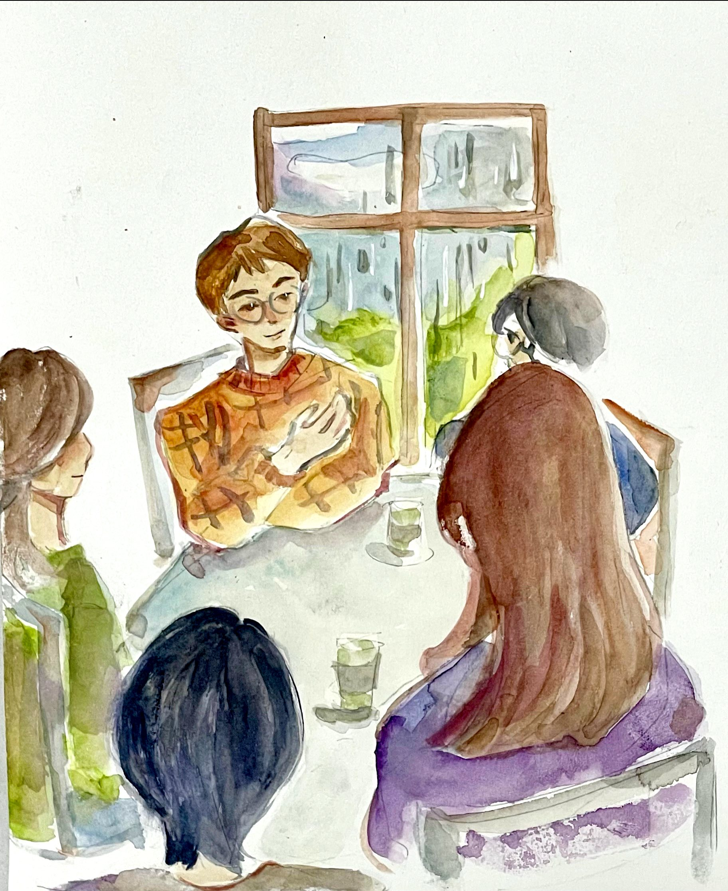
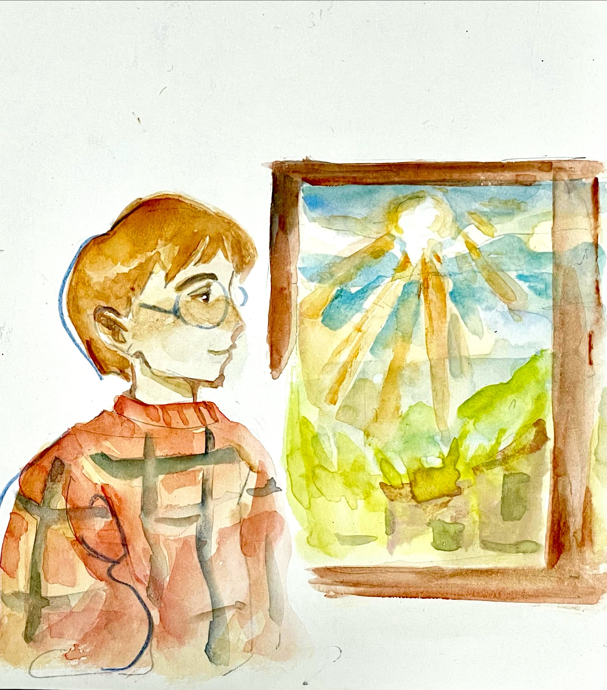

Study Abroad · United Kingdom
英國站一段從劍橋開始的旅程
從香港飛往英國，航程長達十四小時。這趟想像中的遊學旅程，從一場睡不著的飛行開始，經過課堂、朋友、藝術與雨，最後帶著新的回憶踏上下一段路。
The First Day
十四小時後，英國就在眼前
從香港飛往英國，航程長達十四小時。不知是年紀漸長，還是太過興奮，在飛機上輾轉反側，怎麼也睡不著。抵達後，我便馬不停蹄地前往劍橋的教育中心報到。
"Hello. What's your name?"
"I'm Elaine Chan. Here's my passport, and here's my registration confirmation."
多年苦練的英文，終於大派用場。
"You’ll have English classes in the morning and sightseeing activities in the afternoon. Your first class starts at nine tomorrow morning," the staff member said.
他替我辦妥了入住學生宿舍的手續，還幫我把行李送到房間。安頓好一切後，我梳洗一番，便躺下休息，滿心期待著久違的學生生活。

A Familiar Voice
在異地遇上同鄉
一踏進教室，地道的廣東話便在耳邊響起。在異地遇上同鄉，總讓人感到格外親切、安心。我走上前打招呼，希望能結識幾位旅伴，讓異地旅程不再孤單。
「Hello，叫我 Ken 就得。」眼前的男孩個子高高的，戴著黑框眼鏡。臉上的鬍子不但不顯突兀，反而讓他看起來更成熟。
他熱情地向我介紹下午的行程：「等會兒我們會去大英博物館參觀，一定要去看羅塞塔石碑。上面刻著托勒密五世的詔書，還有古埃及象形文字、世俗體和古希臘文……」
「那個……羅甚麼塔……到底有多好看啊？」這些文縐縐的東西，實在不太適合我。不過，既然來都來了，當然也得去欣賞一番。話音剛落，先生便宣布到了午餐時間。
來英國之前，我早已做足資料搜集，一心想嚐嚐炸魚薯條。誰知滿懷期待地打開午餐盒，映入眼簾的卻是一份冰涼的三文治、一根香蕉和一包墨西哥脆片。這……真的吃得飽嗎？難怪這裡的人個個身形苗條，沒有一碗飯，怎麼填得飽肚子呢？

London In The Rain
古老校園裡的溫暖風景
「嘩，墨西哥脆片，正啊！」阿菲清脆的聲音打斷了我的思緒。她也是香港人，和 Ken 結伴而來。個子嬌小的她，笑起來十分可愛。兩人都是英文系學生，常常熱心地替我這位「超齡學生」補課，讓我被老師提問時，也稍稍鬆一口氣。
那天的行程臨時有所調整，我們改乘旅遊巴前往倫敦，先參觀著名的倫敦塔橋，再到倫敦藝術大學交流。塔橋和照片上的幾乎一模一樣，依然壯麗得令人屏息。我眨了眨眼，彷彿按下快門，把這一刻的美景深深收藏在心裡。
倫敦的生活節奏與劍橋截然不同，果真不愧是與紐約、香港並稱「紐倫港」的國際大都會。倫敦藝術大學的校園彷彿一座古堡，典雅的紅磚建築映著綠意盎然的草地，漫步其中，恍若置身古蹟。我在這裡上美術課，也遇見了兩位香港人——Ivan 和 Macy。他們都是來這裡交換的學生，一位擅長數位繪畫，另一位則精於水彩，令人羨慕不已。豆大的雨點敲打著窗欞，古老的校園裡，我們一同回憶年少、一同緬懷歲月、一同細數鄉愁。身處人人都較為含蓄的英國，那傾聽的專注、那交談的真誠、那親切的笑容，無疑成了異鄉生活中最溫暖的風景。

One Last Game
陰天裡，也要活動活動筋骨
哎呀，來了英國這麼多天，天空總是陰沉沉的。景色固然優美，卻總帶著幾分文學與藝術的氣息，好像不太合我的胃口。我實在想活動活動筋骨，於是便去了宿舍的健身室，打算好好伸展一番。我在櫃檯租了羽毛球拍，便開始物色對手。放眼望去，大家個個都高高大大，我哪裡打得過？
忽然，一位戴著眼鏡的華裔男生從我面前經過——這不就是最理想的對手嗎？我連忙上前叫住他：「你……Oh, would you like to play badminton with me?」心急之下，我一時忘了自己身在英國，開口便先說了句廣東話，接著才趕緊改用英文。
「Oh, yes！講廣東話都得！我係香港人嚟！」
原來他叫豪仔，留著一頭清爽的短髮，穿著合身的運動服，手臂線條結實，一看就知道是個熱愛運動的人。我們打了幾局羽毛球，打得酣暢淋漓，痛快極了。
日子過得飛快，轉眼間，我又要收拾行裝，踏上下一段旅程了。

英國站完 · 下一段旅程，將在澳洲展開